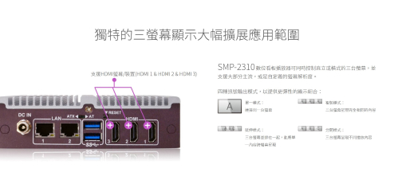
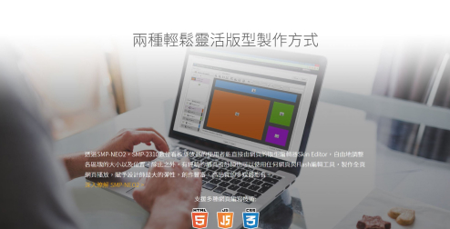
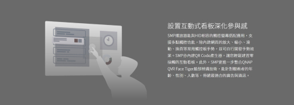
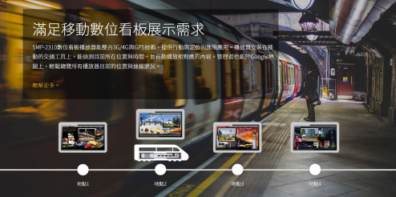
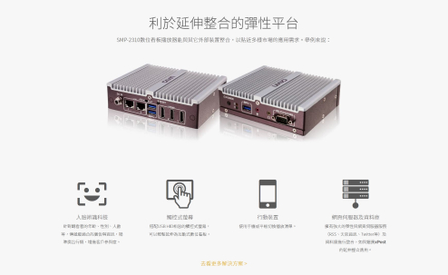
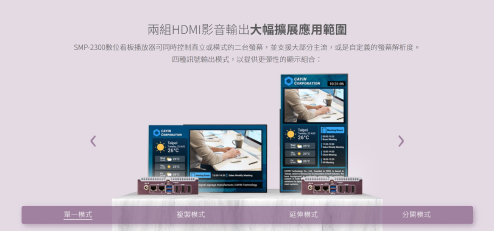
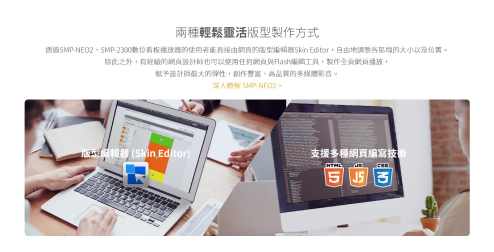
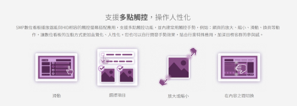
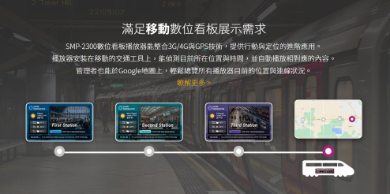
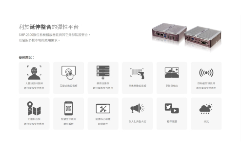

專案背景
CAYIN 鎧應科技是一家專注於設計數位廣告看板播放器、以及播放軟體的一家科技公司。SMP 系列是鎧應科技推出已久的播放器系列，該系列產品雖有不斷地推陳出新，但產品頁面卻仍是使用舊有的設計內容，除了圖像及設計風格老舊之外、也缺乏動態與互動元素。
專案目標
在鎧應科技即將推出新產品之際，決定統一將該系列產品進行大改造，希望強化產品的特色，並提高對客戶的吸引力。 該專案希望達到幾個目標:
我們希望將該產品的定位與其他系列產品做區分，讓銷售團隊更便於推廣，同時也讓瀏覽的客戶更快掌握自己是否適合該產品。
希望增加產品應用的實際畫面，展現如何使用該產品進行數位廣告播放，讓客戶對產品的功能有更好的理解。
希望藉由動態且可互動的介面，加強客戶對產品留下的印象。
設計策略
為了將各產品系列作區分，因此為每個系列都制定了主色系，例如該產品便是使用與產品的外觀相同的紫色作為主色。而為了展現專業感，整體視覺採用簡約俐落的風格。
此外，為了讓客戶能快速判斷該產品是否適合自己、並迅速了解該產品的特性，在產品頁的開頭位置放入了該產品銷售方案的介紹影片、以及產品特點概覽，並在各個特點上加入連結功能，讓客戶能針對有興趣的部分深入了解。
設計前後對比
原本
原本的設計過於強調播放器機器上的輸出孔、圖像面積過大，但輸出孔並無法立即讓客戶聯想到實際產品能如何使用。
文案中敘述產品能輕鬆使用兩種方式進行模板製作，但在設計中卻無法立即判斷是哪兩種方式。
該段在敘述產品能設置互動式看板，可使用觸控功能製作互動加深參與感，但只使用靜態圖像無法使客戶立即產生聯想。
雖然在設計中大量加入了交通工具的圖像，但因為缺乏動態元素，無法強化移動的印象。
雖然文案在強調可以使用的延伸整合功能，產品機器的圖像面積卻太大，使得重點無法凸顯。
改造後
改造後讓輸出的螢幕成為主體，使得客戶能馬上了解該產品能夠如何使用、以及各個輸出模式的差異。
改造後強化了兩種製作方式的印象，讓顧客一目了然知道分別可以使用甚麼工具進行製作。
改造後不再使用靜態圖像，而是使用向量動畫展示可以使用的觸控方式，強化了互動的印象。
改造後除了交通工具的圖像外、也加入了CSS動畫，讓顧客更能清楚了解如何在移動地交通工具上使用數位看板。
改造後將產品圖像作為輔助元素，加強各個延伸整合功能。